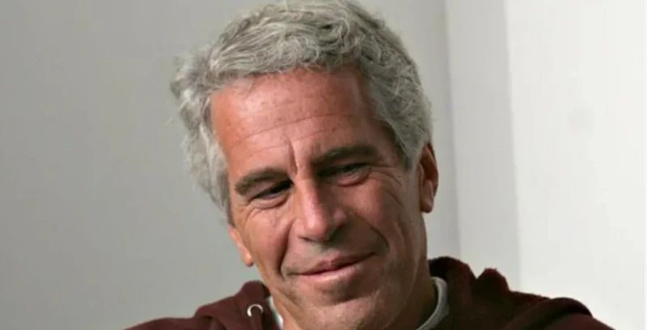
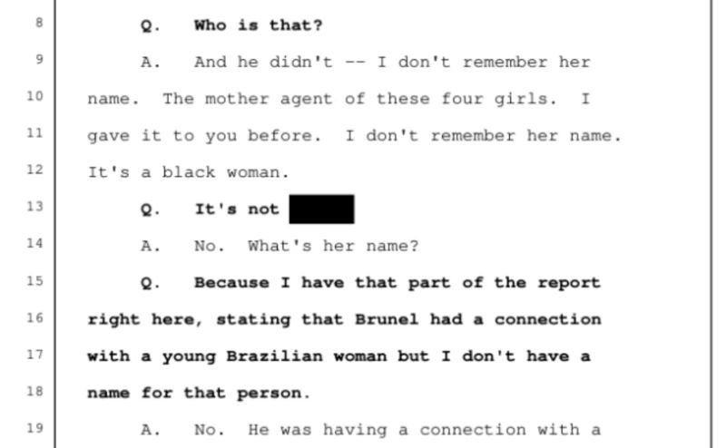
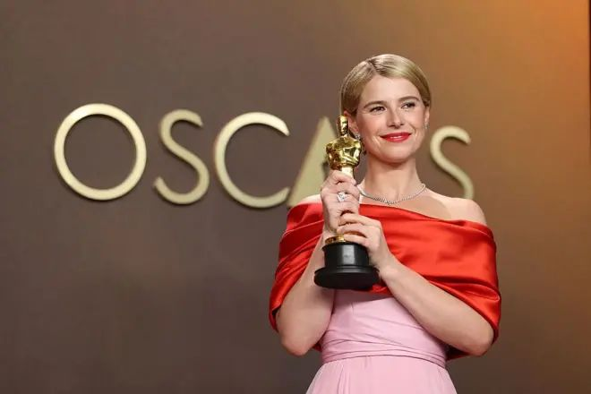
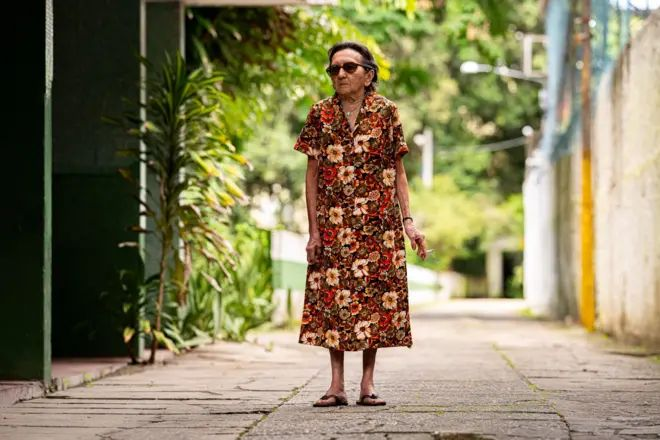

How Epstein planned to recruit women in Brazil
Os indícios de como bilionário pretendia recrutar mulheres no Brasil
An 'agent mother' supplied girls in Brazil
A 'agente mãe' no Brasil

The millions of new documents about convicted sex offender Jeffrey Epstein, released on Friday, January 30, give evidence about possible actions and interests that the businessman had in Brazil. The documents cite testimony stating that he would have a connection in Brazil with an "agent," who would get underage girls when he was in the country for business.
Os milhões de novos documentos sobre o criminoso sexual condenado Jeffrey Epstein, divulgados na última sexta-feira, 30/01, dão indícios sobre uma possível atuação e interesses que o empresário tinha no Brasil. Os documentos citam depoimento que afirma que ele teria uma conexão no Brasil com uma "agente", que conseguia garotas menores de idade quando ele estava no país a trabalho.
They also mention that at least four Brazilian girls, including teenagers, were brought to him at a party at one of his houses in the United States. A testimony from one of Epstein's victims said that at least 50 Brazilian women had been at his mansion.
Mencionam também que ao menos quatro garotas brasileiras, inclusive adolescentes, teriam sido levadas para ele em uma festa, em uma de suas casas, nos Estados Unidos. A BBC News Brasil mostrou, em dezembro, que uma das vítimas de Epstein disse que ao menos 50 brasileiras estiveram em sua mansão.
There are also conversations in emails about an idea to create a beauty contest to attract young girls in Brazil and interest in acquiring a fashion magazine. BBC News Brasil identified approximately 4,000 mentions of Brazil in documents so far, including email exchanges and messages from Epstein with friends and assistants, identifiers in photos, and news about the country.
Há ainda conversas em emails sobre uma ideia de criar um concurso de beleza para atrair garotas jovens no Brasil e o interesse em adquirir uma revista de moda. Ao todo, a BBC News Brasil identificou cerca de 4 mil menções ao país em documentos até o momento, incluindo trocas de emails e mensagens de Epstein com amigos e auxiliares, identificadores em fotos e notícias sobre o país.
A testimony given to the Florida Justice system in June 2010, which is among the documents released by the U.S. government, states that Jeffrey Epstein made trips to Brazil to meet clients and that, when in the country, he had contact with a woman who provided girls for prostitution, including minors.
Um depoimento feito à Justiça da Flórida em junho de 2010, que está entre os documentos divulgados pelo governo americano, afirma que Jeffrey Epstein fazia viagens ao Brasil para falar com clientes e que, quando estava no país, possuía contato com uma mulher que lhe fornecia garotas para prostituição, inclusive menores de idade.
The name of the person providing the information is redacted, but throughout the testimony, she says she worked for Jean-Luc Brunel, a French former model agent and known partner of Epstein. Brunel was accused of having trafficked women and was found dead in a Paris prison in France in 2022. He had been detained since the beginning of a formal investigation, after being accused of sexual harassment and rape against young people aged 15 to 18 in France. He denied the accusations.
O nome da pessoa que traz as informações é tarjado, mas ela diz, ao longo do depoimento, que trabalhou para Jean-Luc Brunel, ex-agente de modelos francês e conhecido parceiro de Epstein. Brunel foi acusado de ter traficado mulheres e foi encontrado morto na prisão em Paris, na França, em 2022. Estava detido desde o início de uma investigação formal, após ser acusado de assédio sexual e estupro contra jovens com idades entre 15 e 18 anos na França. Ele negava as acusações.
The former employee of the modeling agency alleged in her testimony that the company did not make profit, that it was sustained with Epstein's support, and that she believed the financier only had interest in being involved with the company because of the girls, including minors.
A ex-funcionária da agência de modelos alegou no depoimento que a companhia não dava lucro, que era sustentada com apoio de Epstein e que acreditava que o financista só tinha interesse em se envolver com a empresa por causa das meninas, inclusive menores.
The recruitment network structure
A estrutura da rede de recrutamento
According to the testimony, Brunel had contact with a woman who obtained prostitutes for him and Epstein in Brazil "whenever needed." The witness says it would be difficult to get information in Brazil and suggests there could be payments for silence: "Five thousand dollars in Brazil is a lot of money. You can buy a house." And continuing: "Jeffrey Epstein has all the money he has, he could shut everyone up."
Segundo o depoimento, Brunel tinha contato com uma mulher que conseguia prostitutas para ele e Epstein no Brasil "quando precisasse." A testemunha diz ainda que seria difícil conseguir informações no Brasil e sugere que poderia haver pagamentos por silêncio. "Cinco mil dólares no Brasil é muito dinheiro. Dá pra comprar uma casa." E continua: "Jeffrey Epstein tem todo o dinheiro que tem, ele podia calar todo mundo".
Recruitment network structure
Estrutura da rede de recrutamento

Brunel's visits to Brazil are documented
As visitas de jean-luc Brunel ao Brasil são conhecidas

The visits by Jean-Luc Brunel to Brazil are well documented. Several reports published in recent months, including by BBC News Brasil, show that he was in the country looking for models. His documented visits include 2010 and 2019.
As visitas de Jean-Luc Brunel ao Brasil são conhecidas. Diversas reportagens publicadas nos últimos meses, inclusive pela BBC News Brasil, mostram que ele esteve no país em busca de modelos.
A British Guardian newspaper article published in August 2019 reports that while Epstein's allies disappeared from public life in the years following his plea agreement, "Brunel continued traveling the world in search of young women and girls to turn into models."
Uma reportagem do jornal britânico The Guardian, publicada em agosto de 2019, relata que enquanto aliados de Epstein desapareceram da vida pública nos anos seguintes ao seu acordo judicial, "Brunel continuou a viajar pelo mundo em busca de mulheres jovens e meninas para transformá-las em modelos".
The newspaper reported that Brunel was in Brazil in 2019 to "find new models to take to the United States" and that when a reporter visited a Miami apartment owned by Brunel, the door was answered by a young woman who said she was a Brazilian model who was there to work for MC2, his agency, and that there were at least three other models staying in the apartment.
O jornal afirmou que Brunel esteve no Brasil em 2019 para "encontrar novas modelos para levar aos Estados Unidos" e que, quando um repórter visitou um apartamento em Miami de propriedade de Brunel, a porta foi atendida por uma jovem que disse ser uma modelo brasileira que estava lá para trabalhar para a MC2, sua agência, e que havia pelo menos outras três modelos hospedadas no apartamento.
Beauty contest idea: thousands of girls, $500,000 investment
Ideia do concurso de beleza: milhares de garotas, investimento de us$ 500 mil

In another email exchange in 2016, Epstein discusses with another person the idea of buying a modeling agency in Brazil. "I'm not sure this would be viable without someone there to manage that you can trust 100%, but I'm passing it along in case you're interested," says the interlocutor.
Em outra troca de e-mail, em 2016, Epstein discute com outra pessoa a ideia de comprar uma agência de modelos no Brasil. "Não tenho certeza se isso seria viável sem alguém lá para gerenciar que você possa confiar 100%, mas estou passando, caso você esteja interessado", diz o interlocutor.
In another message, he states that Epstein seems to be more interested in "access to" young girls. The sender then cites the possibility of holding a competition for models in Brazil to achieve this objective.
Em outra mensagem, ele afirma que Epstein parece estar mais interessado no "acesso às" garotas jovens. O remetente cita então a possibilidade de se fazer uma competição para modelos no Brasil.
The beauty contest proposal
A proposta do concurso de beleza
"This would involve paying the organizer and then he would find sponsors and they would search the country for models in potential. Would you be interested in this? That way, you would get younger girls and less tired from the fashion industry. New faces, basically. So that's another option."
"Isso envolveria pagar ao organizador e, então, ele encontraria patrocinadores e eles vasculhariam o país em busca de modelos em potencial. Você estaria interessado nisso? Dessa forma, você conseguiria garotas mais jovens e menos cansadas da indústria da moda. Rostos novos, basicamente. Então, essa é outra opção."
The competition would involve thousands of girls and a $500,000 investment. "They basically search the country and many girls appear. That's how they discovered most of the major Brazilian models who made it in New York."
O concurso envolveria milhares de garotas e um investimento de US$ 500 mil. "Eles basicamente vasculham o país e muitas garotas aparecem. Foi assim que eles descobriram a maioria das principais modelos brasileiras que fizeram sucesso em Nova York."
According to this message sent to Epstein, "this would imply having access to all the girls, with which you could decide what to do." The interlocutor then states: "You could basically take these girls anywhere in the USA (there is a Brazilian agency that handles visas for the USA), or to Paris or the Caribbean."
Segundo esta mensagem enviada a Epstein, "isso implicaria ter acesso a todas as garotas, com as quais você poderia decidir o que fazer." O interlocutor afirma então: "Você poderia basicamente levar essas garotas para qualquer lugar nos EUA (há uma agência brasileira que cuida dos vistos para os EUA), ou para Paris ou o Caribe."
When discussing the option of acquiring one of these agencies, he considers: "It would be a good investment if you wanted to build an already established brand and, of course, many opportunities to meet models. But I think it's not the same direct access as the contest, where the girls are mostly rural and not experienced models."
Ao voltar a falar sobre a opção de adquirir uma dessas agências, ele pondera: "Seria um bom investimento se você quisesse construir uma marca já estabelecida e, é claro, muitas oportunidades de conhecer modelos. Mas acho que não é o mesmo acesso direto que o concurso, onde as garotas são na maioria caipiras e não modelos experientes."
Interest in buying a fashion magazine to attract models
O interesse em comprar uma revista de moda no Brasil

Another conversation that extended through a series of emails in August 2016 dealt with the interest of an Epstein partner in buying a fashion magazine with him in Brazil.
Outra conversa que se estendeu por uma série de e-mails, em agosto de 2016, tratava do interesse de um parceiro de Epstein em comprar uma revista de moda com ele no Brasil.
The idea, according to the conversations, would be to use the publication to attract models. Epstein initially shows interest and the man goes to seek more information. The conversation shows that he would have thought about making an offer of $200,000 for 25% of the magazine's shares.
A ideia, segundo as conversas, seria usar a publicação para atrair modelos. Epstein demonstra interesse inicial e o homem vai buscar mais informações. A conversa mostra que ele teria pensado em fazer uma oferta de US$ 200 mil por 25% das ações da revista.
The negotiation cooled in December, when doubt arises about whether the business would be profitable. "Stay away," Epstein suggested, according to the messages. The man then laments.
A negociação teria esfriado em dezembro, quando surge a dúvida sobre se o negócio daria prejuízo. "Fique longe", sugeriu Epstein, segundo as mensagens. O homem então lamenta.
Magazine acquisition plan
Plano de aquisição de revista
"Think about all the girls I would have... ok, I'll let it pass... maybe just buy Brazil for a few hundred thousand; that will ensure a steady flow..."
"Pense em todas as garotas que eu teria... ok, vou deixar passar... talvez só compre o Brasil por algumas centenas de milhares; isso garantirá um fluxo constante..."
In another conversation in 2017, this same man tells Epstein that he achieved a better deal: instead of buying the magazine, he would have supposedly paid a magazine editor. "I have the local Brazilian publisher in my pocket," he reports.
Em outra conversa, em 2017, esse mesmo homem diz a Epstein que conseguiu um acordo melhor: ao invés de comprar a revista, ele teria supostamente pago um editor da revista.
"So whenever I want them to photograph a girl, I simply give him a few thousand. It's much cheaper this way... it wouldn't make a profit anyway," he said, according to the messages in the files released by the U.S. government.
"Então, sempre que quero que eles fotografem uma garota, eu simplesmente dou a ele alguns milhares. É muito mais barato assim... não ia dar lucro mesmo", disse, segundo as mensagens que aparecem nos arquivos divulgados pelo governo americano.